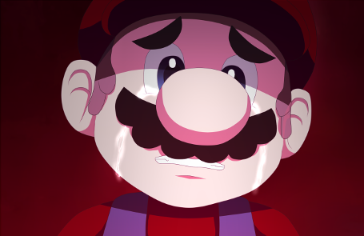
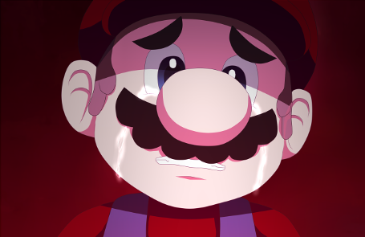

AJP25Guides
The place where you can find classic spoil-free guides for NEW and OLD games
THESE WALKTHROUGHS WERE MADE BY Austin J. Cowan. IF YOU SEE ANY WALKTHROUGH THAT WAS NOT CREATED BY ME BUT THAT LOOKS LIKE MINE, REPORT IT!
Hello everyone, this is the creator of these walkthrough and site. I hope these guide helps you and
if I miss anything, please email me: AJP25Guides@gmail.com. I will try to fix them ASAP.
Other sites that I'm in:
DeviantArt
NOTE:
ALL CHARACTERS, ARTWORK, AND MUSIC BELONG TO THEIR RESPECTIVE OWNERS,
I DO NOT OWN OR MAKE ANY CHARACTERS, ARTWORK, AND MUSIC THAT I DISPLAY HERE AND ON ANY PAGE DISPLAYED ON MY WEBSITE!
 The Music Box Series Banner.png) CLICK THE IMAGES FOR THE WALKTHROUGH OF THE GAME YOU WANT!
CLICK THE IMAGES FOR THE WALKTHROUGH OF THE GAME YOU WANT!
 
If you are reading this Jessica (Marios-Friend9), you made a wonderful and beautiful game.
Your artwork and whoever made this game possible are amazing. Keep up the good work and I
hope you finish ARC soon and make more games after that! :)
Links to her pages:
DeviantArt, Twitter, YouTube.
Link to the Game's Website:
(Mario) The Music Box
As you know now, (Mario) The Music Box is getting taken down from acouple of sites.
I wish I could post a download link to the game. But I will not. I don't also want this
walkthrough to be taken down as well. WHY NINTENDO, WHY?!?!?!?!
You can download the gallery photos of (Mario) The Music Box if you want. They are pretty amazing to look at: CLICK HERE!

If you are reading this Jessica (Marios-Friend9), you made a wonderful and beautiful game.
Your artwork and whoever made this game possible are amazing. Keep up the good work and I
hope you finish ARC soon and make more games after that! :)
Links to her pages:
DeviantArt, Twitter, YouTube.
Link to the Game's Website:
(Mario) The Music Box
As you know now, (Mario) The Music Box is getting taken down from acouple of sites.
I wish I could post a download link to the game. But I will not. I don't also want this
walkthrough to be taken down as well. WHY NINTENDO, WHY?!?!?!?!
You can download the gallery photos of (Mario) The Music Box if you want. They are pretty amazing to look at: CLICK HERE!